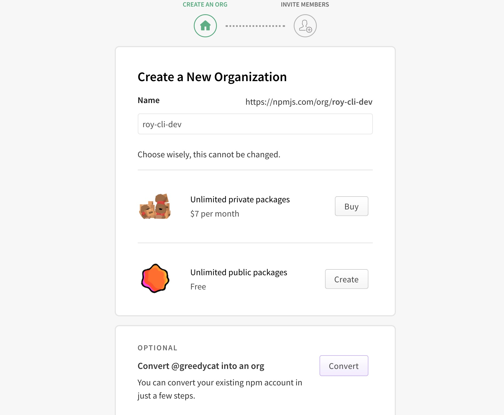
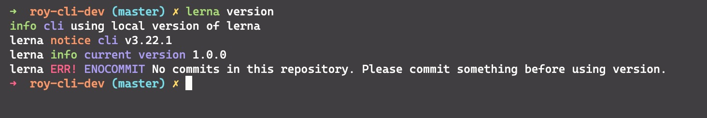
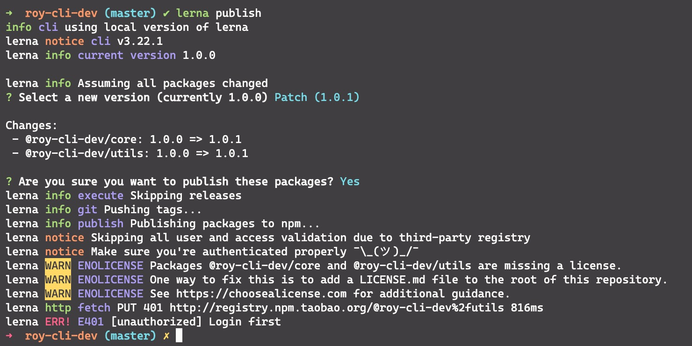
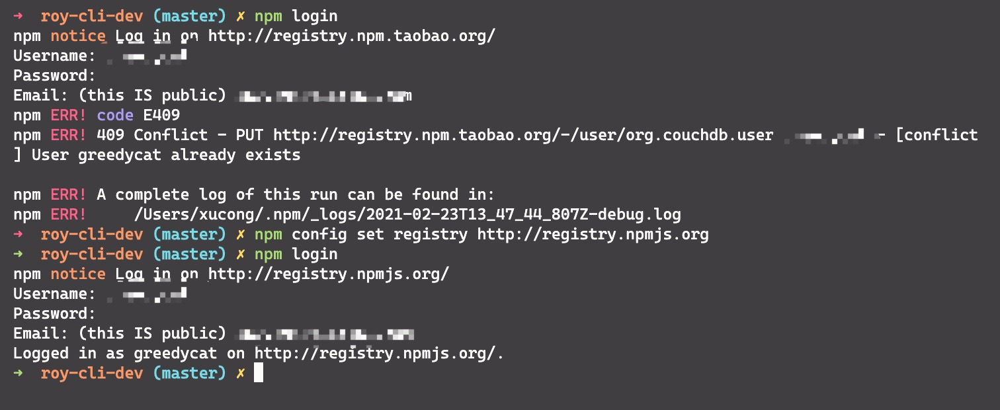
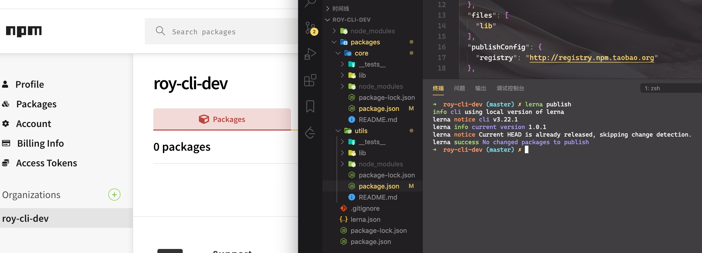
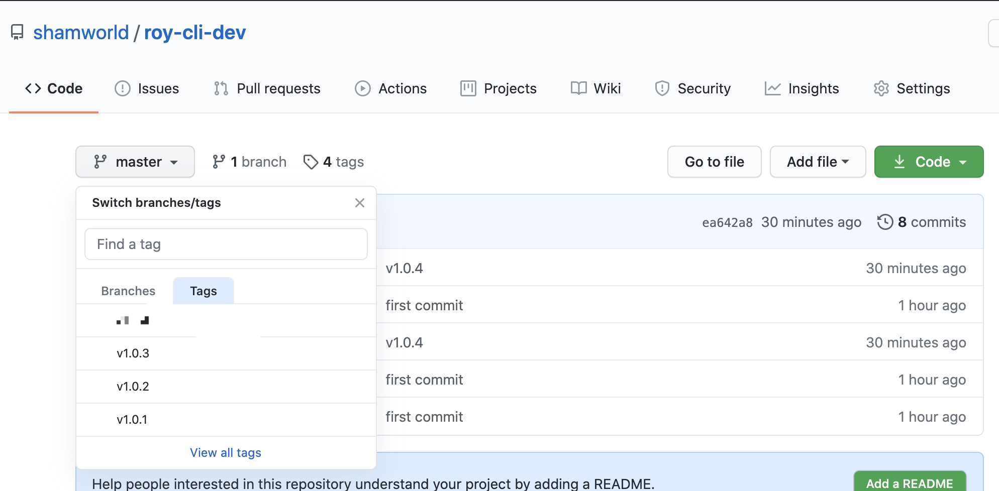
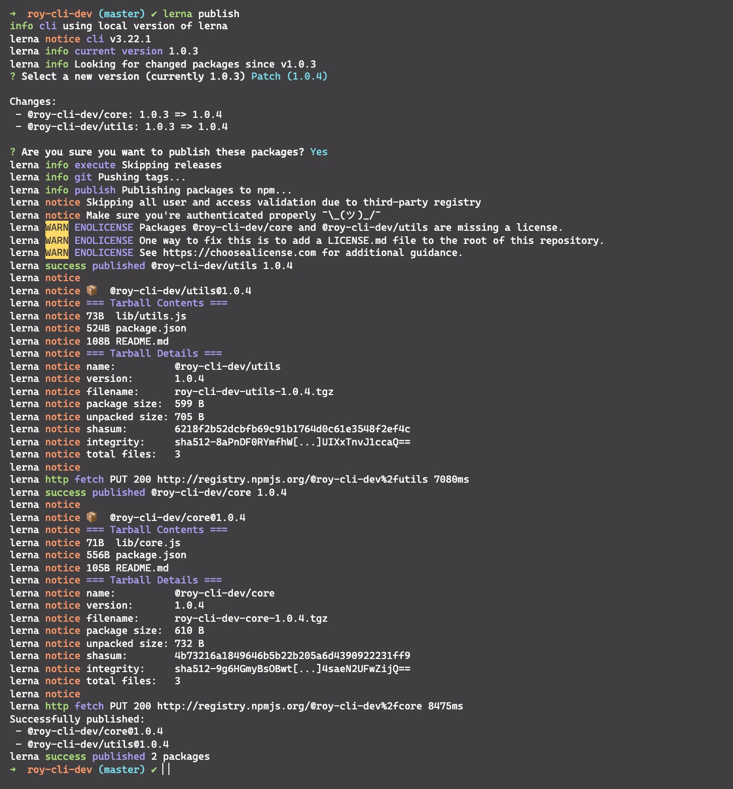

脚手架架构设计和框架搭建
站在前端研发的视角，分析开发脚手架的必要性
研发性能
开发脚手架的核心目标是: 提升前端研发效能
脚手架核心价值
将研发过程:
- 自动化:项目重复代码拷贝/git操作/发布上线操作
- 标准化:项目创建/git flow/发布流程/回滚流程
- 数据化:研发过程系统化、数据化、使得研发过程可量化
和自动化构建工具区别
问题:jenkins,travis等自动化构建工具已经比较成熟了，为什么还需要自研脚手架？
- 不满足需求:jenkins,travis通常在git hooks 中触发，需要在服务端执行，无法覆盖研发人员本地得功能，如:创建项目自动化，本地git操作自动化等
- 定制复杂:jenkins,travis定制过程需要开发插件，过程比较复杂，需要使用java语言，对前端同学不够友好
从使用角度理解什么是脚手架？
脚手架简介
脚手架本质是一个操作系统得客户端，它通过命令行执行，比如:
vue create vue-test-app
上面这条命令由3个部分组成:
- 主命令:vue
- command:create
- command的param:vue-test-app
它表示创建一个vue项目，项目得名称为vue-test-app,以上是最简单得脚手架命令，但实际场景往往更加复杂，比如：
当前目录已经有文件了，我们需要覆盖当前目录下得文件，强制进行安装vue项目，此时我们可以输入:
vue create vue-test-app --force
这里得--force叫做option，用来辅助脚手架确认在特定场景下用户得选择，可以理解为配置
脚手架的执行原理

脚手架的执行原理如下:
- 在终端输入
vue create vue-test-app - 终端解析出
vue命令 - 终端在环境变量中找到
vue命令 - 终端根据
vue命令链接到实际文件vue.js - 终端利用
node执行vue.js vue.js解析 command / optionsvue.js执行 command- 执行完毕，退出执行
从应用得角度看如何开发一个脚手架
这里以
vue-cli为例
- 开发
npm项目，该项目中应包含一个bin/vue.js文件，并将这个项目发布到npm - 将
npm项目安装到node的lib/node_modules - 在
node的bin目录下配置vue软链接指向lib/node_modules/@vue/cli/bin/vue.js
这样我们在执行vue命令的时候就可以找到vue.js进行执行
脚手架实现的原理
首先来看几个问题:
- 为什么全局安装
@vue/cli后会添加得命令为vue?
那是因为在package.json中，通过bin来配置的是vue,指向了bin/vue.js
- 全局安装
@vue/cli时发生了什么？
首先npm会把当前的包下载到node下面的node_modules这个目录里面,如果是全局安装的，它可能存在/usr/lib这个目录下面。当这个包完全下载完成后，它回去解析package.json中的bin这个目录,如果说发现bin下面有vue的配置，它就会在node的bin目录下。(说白了就是:把对应的依赖下载到指定的node_modules目录下面，然后去配置一个bin的软连接)
- 执行
vue命令时发生了什么？为什么vue指向一个js文件，我们却可以正好直接通过vue命令去执行它？
操作系统会根据which vue找到bin命令有没有被注册。
这是因为我在js目录上方添加一个环境变量
#!/usr/bin/env node
- 两种写法的区别
#!/usr/bin/env node; #!/usr/bin/node- 第一种是在环境变量中查找node
- 第二种是直接执行
/usr/bin目录下的的node
脚手架的开发流程
脚手架开发流程详情
开发流程
脚手架开发难点
- 分包:将复杂的系统拆分成若干个模块
命令注册:
vue create vue add vue invoke参数解析
- options全称:
--version,--help - options缩写:
-V,'-h' - 带params的options:
--path /Users/xucong/Desktop/RoyCli
- options全称:
示例:
vue command [options] <params>
- 帮助文档
- global help
- Usage
- Options
- Commands
- global help
实例:vue create的帮助信息
Usage: create [options] <app-name>
create a new project powered by vue-cli-service
Options:
-p, --preset <presetName> Skip prompts and use saved or remote preset
-d, --default Skip prompts and use default preset
-i, --inlinePreset <json> Skip prompts and use inline JSON string as preset
-m, --packageManager <command> Use specified npm client when installing dependencies
-r, --registry <url> Use specified npm registry when installing dependencies (only for npm)
-g, --git [message] Force git initialization with initial commit message
-n, --no-git Skip git initialization
-f, --force Overwrite target directory if it exists
--merge Merge target directory if it exists
-c, --clone Use git clone when fetching remote preset
-x, --proxy <proxyUrl> Use specified proxy when creating project
-b, --bare Scaffold project without beginner instructions
--skipGetStarted Skip displaying "Get started" instructions
-h, --help output usage information
Missing required argument <app-name>.
还有很多，比如:
- 命令行交互
- 日志打印
- 命令行文字变色
- 网络通信:HTTP/WebSocket
- 文件处理
等等...
脚手架本地link的标准流程
链接本地脚手架：
cd your-cli-dir
npm link
链接本地库文件:
cd your-cli-dir
npm link
cd your-cli-dir
npm link your-lib
取消链接本地库文件:
cd your-cli-dir
npm unlink
cd your-cli-dir
# link存在
npm unlink your-lib
# link不存在
rm -rf node_modules
npm install -S your-lib
理解npm link:
npm link your-lib: 将当前项目中的node_modules下指定的库文件链接到node全局node_modules下的库文件npm link: 将当前项目链接到node全局node_modules中作为一个库文件，并解析bin配置创建可执行文件
理解npm unlink:
npm unlink: 将当前项目从node全局node_modules中移除npm unlink your-lib: 将当前项目中的库文件依赖移除
Lerna简介
原生脚手架开发痛点分析
痛点一:重复操作
- 多Package本地link
- 多Package依赖安装
- 多Package单元测试
- 多Package代码提交
- 多Package代码发布
痛点二:版本一致性
- 发布时版本一致性
- 发布后相互依赖版本升级
package 越多，管理复杂度越高
Lerna简介
Lerna是一个优化基于git+npm的多package项目的管理工具
优势
- 大幅减少重复操作
- 提升操作的标准化
Lerna是架构优化的产物，它揭示了一个结构真理:项目复杂度提升后，就需要对项目进行架构优化。架构优化的主要目标往往都是以效能为核心
lerna开发脚手架流程

基于Lerna创建项目
安装Lerna
npm install -g lerna
在创建目录下执行lerna初始化命令
lerna init
会在目录结构下创建一个packages文件夹和lerna.json文件,并且为我们初始化一个git仓库
通过lerna来创建package
lerna create core
lerna create utils
创建package的时候会让你输入package name，我们试用npm包组织管理，如@roy-cli-dev/core、@roy-cli-dev/utils
在npm上注册一个命令roy-cli-dev的组织，这样我们发布后就会在指定组织下面,如图

通过lerna来添加依赖
# 给所有的packge添加依赖
lerna add @imooc-cli/utils
# 给指定的package添加依赖
lerna add @imooc-cli/utils packages/core
通过lerna来删除依赖
# 删除package里面的node_modules
learn clean
# 删除package里面的node_modules
lerna exec -- rm -rf node_modules/
# 安装依赖 在package.json里面添加了依赖
lerna bootstap
# 删除指定package里面的node_modules
lerna exec --scope core -- rm -rf node_modules/
删除的是node_modules文件夹，不会删除package.json 中的依赖
执行单元测试
lerna run test
发布项目
我们先查看下版本
lerna --version
运行报错，如图

这说明让我们git commit,首先我们在github上创建一个工程并把链接链接到本地推送
在没有把项目链接到github上的时候，执行lerna public也会报上述错误。下面开始发布项目
lerna publish

这个报错说明我们没有在本地登录npm，因此我们需要执行npm login，登录npm，然而登录的时候出现报错，如图:

该报错说明我们没有把镜像换成npm镜像，还是使用的taobao镜像,执行npm config set registry http://registry.npmjs.org，切换镜像为npm的就可以了
在执行lerna public的时候，如果报错是lerna ERR! E402 You must sign up for private packages,这说明lerna项目默认都是私有项目，我们要在packages的每个包里面的package.json里面添加配置信息:
"publishConfig": {
"access": "public"
}
我们继续执行lerna public,如图

没有显示错误，npm上也没有看到包，这时候看控制台日志就能看出，我们的版本已经存在了，这是为什么呢？因为我们在lerna publish的时候，lerna会在git上把版本打成tag标签，如图:

这时候我们需要重新提交代码到github上。
然后执行lerna publish，最终结果如下:

显示发布成功，然后在npm上搜索可以找到这两个包
Lerna使用细节
lerna init:
会自动完成git初始化，但不会创建
.gitignore，这个必须要手动添加，否则会将node_modules目录都上传到git，如果node_modules已经加入git stage，使用:git reset HEAP <file>执行unstage操作，如果文件已经被git监听到变更，可使用:
git checkout -- <filename>将变更作废，记得在执行操作之前将文件加入
.gitignore
learn add:
- 第一个参数:添加npm包名
- 第二个参数:本地package的路径
选项:
- --dev:将依赖安装到
devDependencies，不加时安装到dependencies
lerna add <package> [loc] --dev- --dev:将依赖安装到
lerna link:
- 如果未发布上线，需要手动将依赖添加到
package.json在执行lerna link
- 如果未发布上线，需要手动将依赖添加到
lerna clean:
- 只会删除
node_modules，不会删除虎package.json中的依赖
- 只会删除
learn exec 和 lerna run:
- --scope属性后添加的是包名，而不是package的路径，这点和
lerna add用法不同
- --scope属性后添加的是包名，而不是package的路径，这点和
lerna publish:
- 发布时会自动执行
git add package-lock.json,所以package-lock.json不要加入.gitignore - 先创建远程仓库，并且同步一次master分支
- 执行
lerna publish前先完成npm login - 如果发布的npm包名为:
@xxx/yyy的格式，需要先在npm注册名为:xxx的organization，否则可能会提交不成功 - 发布到npm group时默认为private，所以我们需要手动在
package.json中添加如下配置:"publishConfig": { "access": "public" }
- 发布时会自动执行
如何通过Yargs来开发脚手架?
脚手架分为三部分构成(vue create vuex)
- bin:主命令在package.json中配置bin属性，npm link本地安装
- command:命令
- options:参数(boolean/string/number)
- 文件顶部增加
#!/usr/bin/env node,这行命令的用途时告诉操作系统要在环境变量当中查询到node命令,通过node命令来执行文件
脚手架初始化流程
- 构造函数:Yargs() (通过Yargs构造函数的调用去生成一个脚手架)
- 常用方法:
- Yargs.options (注册脚手架的属性)
- Yargs.option
- Yargs.group (将脚手架属性进行分组)
- Yargs.demandCommand (规定最少传几个command)
- Yargs.recommendCommands (在输入错误command以后可以给你推荐最接近的正确的command)
- Yargs.strict (开启以后可以报错提示)
- Yargs.fail (监听脚手架的异常)
- Yargs.alias (起别名)
- Yargs.wrapper (命令行工具的宽度)
- Yargs.epilogus (命令行工具底部的提示)
脚手架参数解析方法
- hideBin(process.argv)
- Yargs.parse(argv, options)
命令注册方法
- Yargs.command(command,describe, builder, handler)
- Yargs.command({command,describe, builder, handler})
lerna有什么用，以及它是如何实现命令的调用?
- Lerna是基于git+npm 的多package项目管理工具,它的作用是降低我们很多package项目当中的操作成本,完成一个发布的标准版
- 实现原理:
- 通过import-local优先调用本地lerna命令
- 通过Yargs生成脚手架，先注册全局属性，再注册命令，最后通过parse方法解析参数
- lerna 命令注册时需要传入builder和handler两个方法，builder方法用于注册命令专属的options,handler用来处理命令业务的逻辑
- lerna通过配置npm本地依赖的方法来进行本地开发，具体写法是在package.json的依赖中写入:
file:your-local-module-path,在lerna public的时候自动将该路径替换
Node.js模块路径解析流程
- Node.js项目模块路径解析是通过
require.resolve方法来实现的 require.resolve就是通过Module._resolveFileName方法实现的require.resolve实现原理:Module._resolveFileName方法核心流程有3点:- 判断是否为内置模块
- 通过
Module._resolveLookupPaths方法生成node_modules可能存在的路径 - 通过
Module._findPath查询模块的真实路径
Module._findPath核心流程有4点:- 查询缓存(将request和paths通过
\x00(空格)合并成cacheKey) - 遍历paths,将path与request组成文件路径basePath
- 如果basePath存在则调用
fs.realPathSync获取文件真实路径 - 将文件真实路径缓存到
Module._pathCache(key就是前面生成的cacheKey)
- 查询缓存(将request和paths通过
fs.realPathSync核心流程有3点:- 查询缓存(缓存的key为p，即
Module._findPath中生成的文件路径) - 从左往右遍历路径字符串，查询到
/时，拆分路径，判断该路径是否为软连接，如果是软连接则查询真实链接，并生成新路径p，然后继续往后遍历，这里有1个细节需要注意:- 遍历过程中生成的子路径base会缓存在knownHard和cache中，避免重复查询
- 遍历完成得到模块对应的真实路径，此时会将原路径original作为key，真实路径作为value，保存到缓存中
- 查询缓存(缓存的key为p，即
require.resolve.paths等价于Module._resolveLoopupPaths,该方法用于获取所有的node_modules可能存在的路径require.resolve.paths实现原理:- 如果路径为
/(根目录)，直接返回['/node_modules'] - 否则，将路径字符串从后往前遍历，查询到
/时，拆分路径，在后面加上node_modules,并传入一个paths数组，直至查询不到/后返回paths数组
- 如果路径为